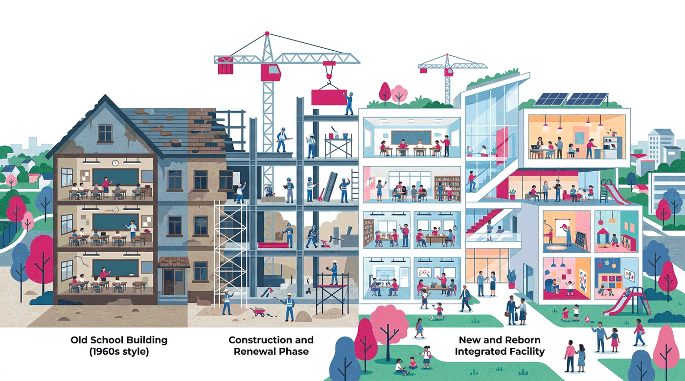

学校施設の老朽化と更新（築30年が7割）
市の学校は315校で、約7割が築30年以上。建て替え（改築）は1校あたり約45.9億円（旧計画29億円から高騰）、長寿命化のリニューアル改修でも1校約10.6億円（旧6.0億円）。改築は年3〜4校ペースにとどまり、統廃合・複合化・長寿命化で事業量を平準化する。

背景
札幌市は300校を超える学校施設（計画対象は幼稚園・学校315校）を持ち、その多くは1970〜80年代の児童生徒急増期に建設され、2016年時点で築30年以上が全体の約7割を占める。市は『学校施設維持更新基本計画』（2016年策定、2024年12月改定）に基づき更新を進めるが、2013年以降の建設工事費・労務単価の高騰で事業費が大きく膨らんだ。建て替え（改築）は1校あたり29億円→改定計画で約45.9億円（校舎7,000㎡＋屋内運動場＋グラウンド）に上昇し、長寿命化のリニューアル改修も6.0億円→約10.6億円に上がった。改築は財政制約から年3校ペースにとどまり（年4校への移行は困難）、全てを建て替えるのは非現実的なため、統廃合・地域機能との複合化（まちづくりセンター・児童会館との合築）と、最長80年までの長寿命化改修を組み合わせて事業量を平準化する方針。学校プールは順次解体し、他施設利用へ移行する。
主要データ
| 学校数 | 計画対象315校（うち改築試算対象174校） |
|---|---|
| 老朽化 | 約7割が築30年以上（2016年時点。1970〜80年代の急増期に建設） |
| 建て替え（改築）費 | 1校あたり約45.9億円（旧計画29億円。校舎7,000㎡＋屋内運動場＋グラウンド） |
| 長寿命化改修費 | リニューアル改修は1校あたり約10.6億円（旧計画6.0億円） |
| 改築ペース | 2026年度まで年3校、以降年4校をめざすが財政的に困難。平準化で年2〜4校 |
| 事業費 | 改定計画の事業費は約280億円規模（うち一般財源 約100億円） |
事実
- 計画対象は幼稚園・学校315校で、その多くは1970〜80年代の児童生徒急増期に建設され、2016年時点で築30年以上が約7割を占める。
- 建て替え（改築）の事業費は当初計画の1校29億円から、改定計画では約45.9億円（校舎7,000㎡＋屋内運動場＋グラウンド。内訳＝校舎30.9億・屋内運動場5.3億・グラウンド6.6億・その他3.1億）に上昇した。
- 長寿命化のためのリニューアル改修（最長使用年数80年）は、1校あたり6.0億円から約10.6億円に上昇した。
- 改築は2026年度まで年3校ペースで、以降は年4校をめざすが、厳しい財政状況から年4校への移行は困難とされ、平準化で年2〜4校で進む見込み。
- 改定計画の事業費は約280億円規模（うち一般財源は約100億円）で推移する見込み。
- 改築は統廃合と一体で進むことが多く、まちづくりセンターや児童会館との複合化でコスト効率と地域機能の維持を両立させる。学校プールは年3校程度を解体し、他施設利用へ移行する。
解釈
学校の老朽化は、公共施設全体の更新需要（公共施設・インフラの更新需要の本格化）と財政（お財布事情）に直結する重い課題だ。300校超・築30年7割という規模を、建て替え1校45.9億円という高騰下で全て改築するのは非現実的。だから札幌は『減らす（統廃合）×束ねる（複合化）×延ばす（長寿命化）』の三点セットで挑み、80年規模の長期で改築事業量を平準化している。学校は避難所でもあり、老朽化＝防災上のリスクでもある。更新の優先順位を、安全性・地域機能・児童数推計で透明に決められるかが問われる。
提案
- 改築・長寿命化・統廃合の優先順位を、耐震・老朽度・児童数推計で見える化する。
- まちづくりセンター・児童会館・高齢者施設との複合化で、更新費と維持費を圧縮する。
- 建設費高騰に対し、標準設計・PFI・長寿命化で1校あたりコストを抑える。
深掘り — 市民の声と答え
古い校舎、そんなに多いの？建て替え費用はいくら？
札幌の学校は300校超（計画対象315校）で、約7割が築30年以上です。誤解されやすいのですが、よく言われる『1校約6億円』は建て替えの額ではなく、長寿命化のためのリニューアル改修の旧単価で、いまは約10.6億円に上がっています。実際の建て替え（改築）は1校あたり約45.9億円（旧計画29億円）と高額で、財政制約から年3校ペースにとどまります（年4校への移行も困難）。このペースだと全校の建て替えには数十年〜80年規模の平準化が必要で、改築だけでは追いつきません。そこで、統廃合で校数を減らし、まちづくりセンターや児童会館と合築（複合化）してコストと地域機能を両立させ、残す校舎は長寿命化改修で最長80年まで延命する、という組み合わせで対応しています。学校は避難所でもあるため、老朽化の放置は防災リスクにも直結します。
検討体制・メンバー
札幌市教育委員会（学校施設担当）が維持更新基本計画を策定・実施。統廃合・複合化では各区・地域と連携する。
AIノート
AIの貢献度は中。校舎ごとの老朽度・耐震・利用状況・児童数推計を束ねて更新優先度をスコア化し、複合化の組み合わせ最適化に役立つ。